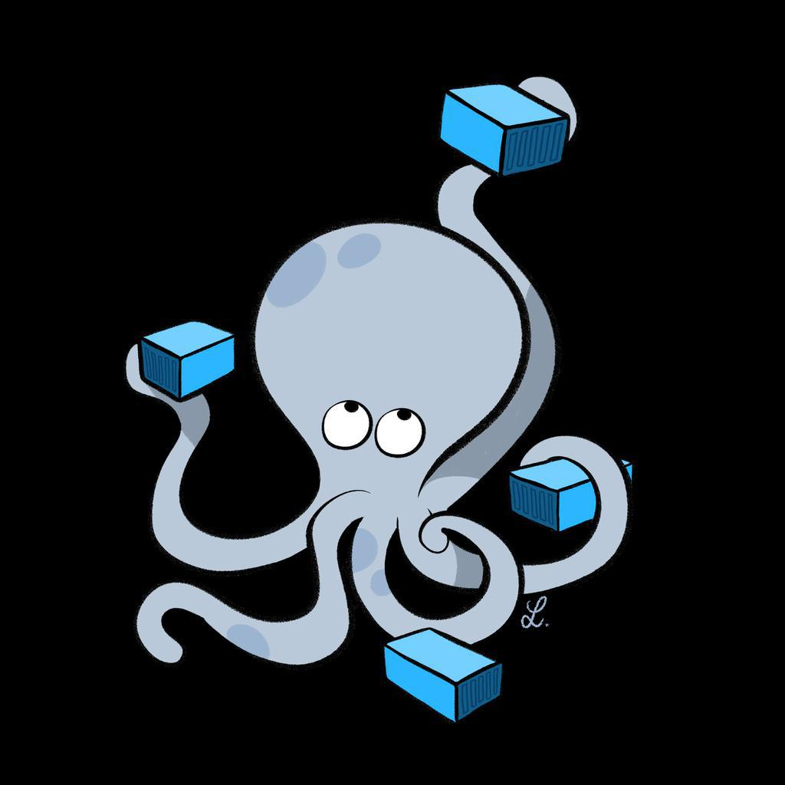
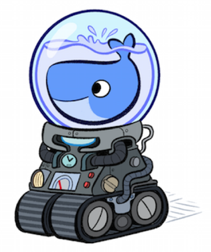

Docker-Compose
Crear Aplicaciones con Múltiples Contenedores
Presentado por:
David Montaño
Agenda
Presentación de Herramientas
- Docker Engine
- Docker Compose
- Docker Machine
- Docker Swarm
Docker Compose
- Características
- Casos de Uso
- docker-compose.yml
Ejemplos
- Portal Comercial Alianza
Restricciones
Presentación de Herramientas
Docker Engine
/* image-name lo pueden consultar en Docker Hub */
[usuario@maquina ~]$ docker pull {image-name}
[usuario@maquina ~]$ docker ps
[usuario@maquina ~]$ docker ps -a
/* container-name lo pueden consultar ejecutando docker ps o docker ps -a */
[usuario@maquina ~]$ docker rm {container-name}
[usuario@maquina ~]$ docker images
/* image-name lo pueden consultar ejecutando docker images */
[usuario@maquina ~]$ docker rmi {image-name}
[usuario@maquina ~]$ docker start {container-name}
[usuario@maquina ~]$ docker stop {container-name}
[usuario@maquina ~]$ docker run {params...}
Docker Engine
docker run -d --name comercial-postgres -p 5432:5432 \
-e POSTGRES_PASSWORD=p0stgr3s_4dm1n \
-v /home/rodrigo/Desktop/postgres:/docker-entrypoint-initdb.d postgres:latest
Docker Compose
- La definición de los contendores se escribe en el archivo docker-compose.yml
- Este archivo debe encontrarse en el directorio desde el cual se ejecuta el comando compose
[usuario@maquina ~]$ docker-compose up -d
Docker Machine
Docker Swarm

Docker Compose
Características
- Múltiples ambientes aislados dentro de un mismo host
- Preserva los datos de los volúmenes cuando se crean los contenedores
- Vuelve a crear únicamente los contenedores que han cambiado
- Permite composición de archivos de definición usando
extends - Permite definir variables de entorno/ambiente
Casos de Uso
- Aprovisionamiento de ambientes de desarrollo
- Automatización de ambientes de pruebas
- Despliegues en un único host
docker-compose.yml
db:
image: postgres
web:
build: /path/local/con/DockerFile
command: python manage.py runserver 0.0.0.0:8000
volumes:
- /path/local/codigo/servidor:/code
ports:
- "8000:8000"
links:
- db
Ejemplo: Portal Comercial Alianza
Restricciones
Restricciones
- Punto Único de Falla
- Estabilidad de la propiedad link para comunicar contenedores
- Docker Compose en ambientes Productivos